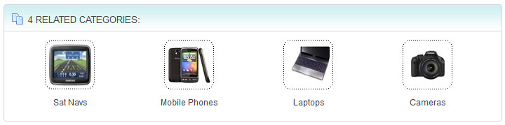
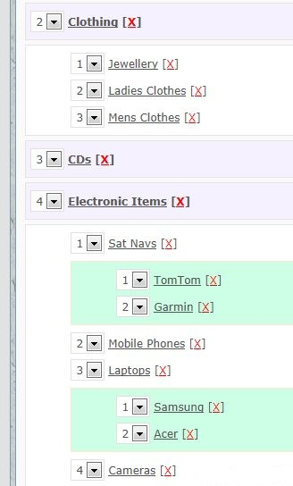
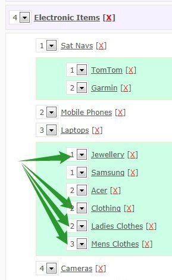
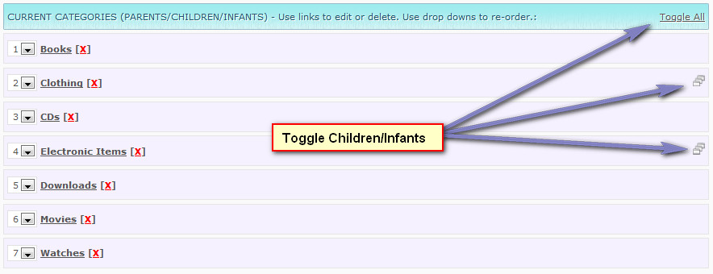

Categories
Before you can add any products into the system you need to add some categories. Maian Cart supports 3 category levels. Parents, children & infants. Optional comments can be specified for categories, as well as
meta keywords and descriptions. You can also specify an alternative browser title text if you prefer.
If a category is disabled, this will also disable any product in that category from display. This can be useful if you want to add all your products into a category before enabling that
category, or you only want to enable products in that category at specific times of the year.
Browser Title Text
If you prefer different text to appear in the browser title bar than the category name, enter alternative text. Use the copy option to copy category name if required. This is optional. If left blank, category name appears in browser title bar.
Category Description
The description appears at the top of any relevant category page. This might be brief details about the products in this category. Leave blank for no description. Use BB Code for formatting, HTML is not allowed.
Example Structure
MOVIES FOR SALE (Parent with 9 children & no infants)
Action & Adventure
Animation
Comedy
Crime & Thriller
Horror
Science Fiction
Sport
War
Westerns
World Cinema
COMPUTERS (Parent with 2 children & 3 infants)
Netbooks
Asus
Dell
Laptops
Acer
Category Image Icon (Optional)
Category icons can be uploaded if you wish. Appears for related categories or parent categories on homepage if enabled. Example screenshot:

Optimal size is 75 x 75 pixels.
Enable Disqus Comments
Maian Cart uses the Disqus comments system. More info here.
Show Related Categories
Do you wish to show related categories? If yes, related categories appear at top of category page. For parents and children, related categories are any other children or parents in the same category. For infants, related categories are infants and children in the same category.
See screenshot above for example display.
Free Shipping
Determines whether free shipping applies to all products in category by default. If enabled, no shipping rules are applied to products category.
Enable Category
Enables or disables category
Disable Auto Open of Sub Categories When Viewing Parents
Edit the 'control/defined.inc.php' file. Change the value of 'AUTO_OPEN_SUB_MENUS' to 0.
Note on Updating Categories
When updating a category, the children and infants will always follow it. However, if the level is greater than max of 3, all infants and children become infants of the new sub category. For
example, view the following tree:

Now lets say we want to move 'Clothing' to 'Laptops'. Because 'Laptops' is a child, all data going into this will be an infant. The original structure of 'Clothing' is lost because the levels
would exceed 3. Now see the following screenshot:

Moving 'Clothing' back to a parent category would only move that category because 'Clothing' no longer has children or infants. In that case, you should update each sub category again to be linked to its parent.
Admin Category View Toggle Option
If you prefer to have ONLY the parents viewable in admin, you can enable the toggle option. To activate edit the 'admin/control/defined.inc.php' file. Change the value of 'CATEGORY_TOGGLE' to 1. This will enable viewing of
children and infants by toggle only. This option is actually set as default on install. See the following screenshot with toggle enabled:

Help Tips
For more information hover your cursor over the help tip images in your admin area for further information.